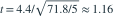

5 对前后测量的差值（后减前）为 7、−3、11、13、−6。假定差值来自正态总体，检验差值均值为 0 的 t 统计量约为？
- A0.16
- B2.16
- C3.16
- D1.16
我已思考，展开答案与解析
正确答案：D
- 差值均值为 4.4，无偏方差为 71.8，故

，自由度 4。
易错提醒先明确分布参数、独立性和统计量的定义，再进行计算。
用户提供练手卷 · 原第 13 题；题目 PDF 第 3 页
单选改编；题干与选项已重新编排

，自由度 4。用户提供练手卷 · 原第 13 题；题目 PDF 第 3 页
单选改编；题干与选项已重新编排